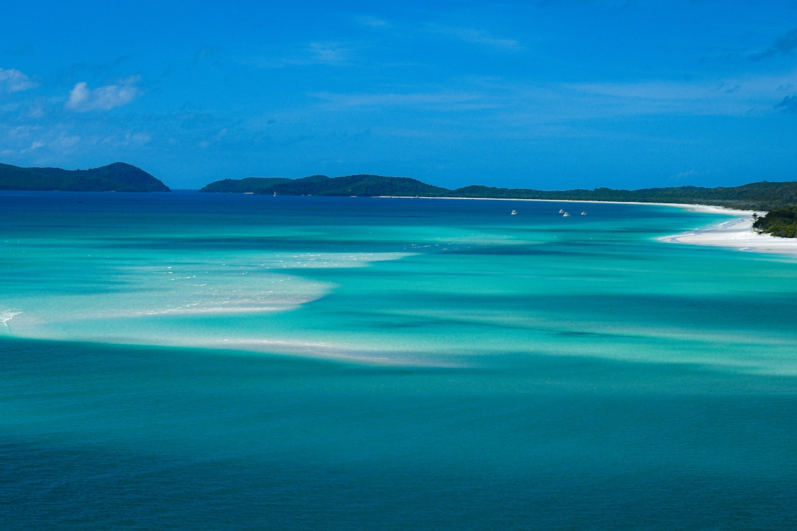
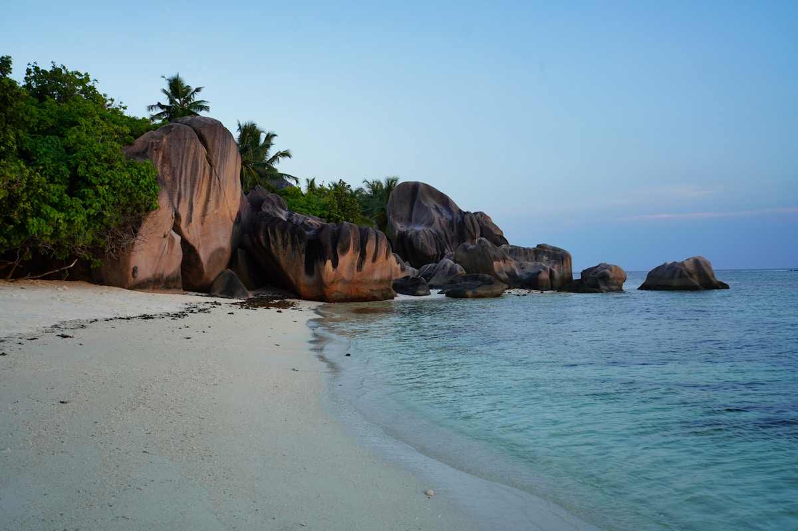
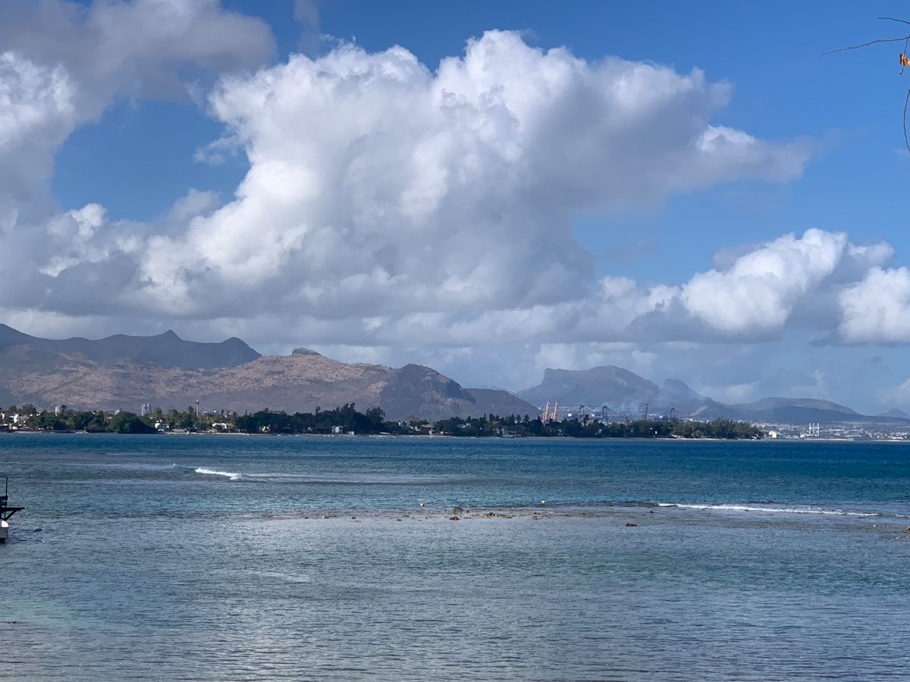
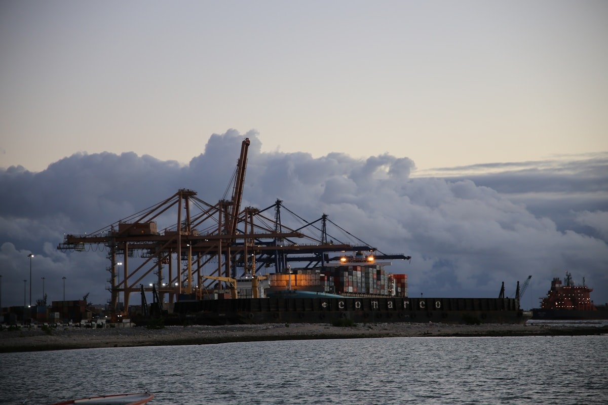
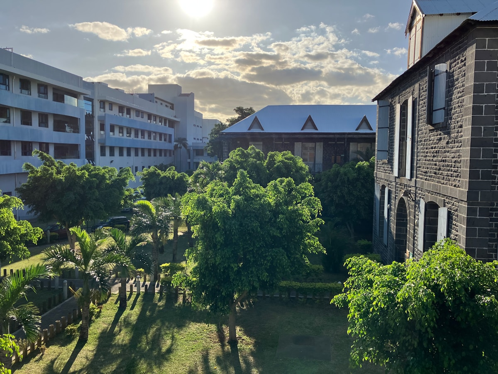

1核心结论
北京
→
转机（阿布扎比/迪拜）
→
马埃岛
→
普拉兰岛
→
拉迪格岛
→
圣安妮海洋公园
→
返程
🌴 8 天怎么安排最合理
塞舌尔是「花岗岩巨砾 + 印度洋蓝」构成的伊甸园：马埃岛是门户，普拉兰岛藏着世界自然遗产五月谷（海椰子），拉迪格岛则拥有全球最美海滩安斯绍尔达金。8 天按马埃 2 天 + 普拉兰 2 天 + 拉迪格 2 天 + 海洋公园 1 天跳岛推进，节奏松弛，绝不赶路。
| 事项 | 结论 |
|---|---|
| 事项 | 结论 |
| 签证（最关键） | 中国护照免签 30 天；但所有旅客必须在出发前到 seychelles.govtas.com 申请旅行授权 TA（标准 10 欧元），需上传返程机票与住宿确认 |
| 机票航线 | 北京✈马埃岛无直飞，经阿布扎比（阿提哈德约 15–20h）、迪拜（阿联酋）或多哈（卡塔尔）转机；往返约 8500–12000 元 |
| 跳岛交通 | 马埃↔普拉兰：快船 Cat Cocos 约 50min（43 欧）或航班 15min；普拉兰↔拉迪格快船约 10–15min（15 欧） |
| 行程链 | 维多利亚 → 波瓦隆海滩 → 五月谷 → 拉齐奥海滩 → 拉迪格环岛 → 圣安妮海洋公园 |
| 预算（人均） | 经济 18000–26000 ／ 标准 32000–48000 ／ 舒适 70000–100000（人民币） |
| 三件提前事 | ① 申请 TA 旅行授权 ② 订渡轮票（旺季 1 个月前） ③ 订岛间酒店（普拉兰/拉迪格住宿少） |
| 季节提醒 | 4–5 月、10–11 月最佳（风小浪平）；6–9 月东南季风浪大但日照好；11–3 月西北季风多阵雨 |
| 支付 | 官方货币塞舌尔卢比（SCR），1 元 ≈ 1.9 SCR；酒店/旅游按欧元或美元计价，ATM 分布在维多利亚与普拉兰 |
⚠️ 两个容易忽略的点
① 没有 TA 旅行授权无法登机：这是免签之外的最硬门槛，出发前 10 天内到官网申请并缴费（约 10 欧元），过境签证都免了千万别漏这一步。② 塞舌尔物价是非洲最贵：中档餐厅一人一餐 30–50 美元，海椰子、龙虾这类「高档货」提前问价；岛间酒店旺季（7 月、12–1 月）提前 2 个月订。
2推荐行程 · 8 天版
以下为 8 天 7 晚的推荐节奏：先马埃岛适应 2 天，再跳普拉兰 2 天（五月谷+拉齐奥），跳拉迪格 2 天（安斯绍尔达金+环岛），最后回马埃岛玩圣安妮海洋公园后返程。渡轮+自行车+出租车三件套就够。
| 日期 | 行程 | 过夜地 | 主题 |
|---|---|---|---|
| D1 抵马埃岛 | 北京✈马埃岛（转机约 15–20h），抵达后入住维多利亚/波瓦隆，海边日落 | 马埃岛 | 抵达+初识 |
| D2 | 马埃岛环岛：维多利亚小本钟 → 国家植物园 → 波瓦隆海滩 → 山间观景台 | 马埃岛 | 马埃环岛 |
| D3 | 乘快船赴普拉兰岛 → 五月谷世界遗产（海椰子） | 普拉兰岛 | 五月谷日 |
| D4 | 普拉兰岛：拉齐奥海滩 → 科科斯岛浮潜（可选） → 岛东北海湾 | 普拉兰岛 | 拉齐奥日 |
| D5 | 乘快船赴拉迪格岛 → 安斯绍尔达金海滩（全球最美海滩） | 拉迪格岛 | 拉迪格首日 |
| D6 | 拉迪格岛租自行车环岛：大安塞 → 联合庄园 → 格拉德湾 | 拉迪格岛 | 环岛骑行 |
| D7 | 返回马埃岛 → 圣安妮海洋公园玻璃底船+浮潜 | 马埃岛 | 海洋公园日 |
| D8 返程 | 马埃岛自由活动/购物 → 机场返京（转机） | — | 收尾 |
🧭 路线可调原则
时间紧可砍掉普拉兰岛的科科斯岛浮潜（D4 下午），并把拉迪格压缩为 1 天半；喜欢潜水可把圣安妮海洋公园换成库瑞厄斯岛（Curieuse，300 卢比，含巨龟与烧烤）。所有酒店都可以托运行李，跳岛不用负重徒步。
3逐小时时间线
以下为 8 天全程的逐小时执行时间线，可当作「当天打开照着走」的清单。标注 ※ 的可选项视体力与天气取舍。
D1 · 抵达马埃岛
转机 15–20 小时，落地入住
🛫 抵达日
| 时间 | 事项 |
|---|---|
| 06:00–15:00 | 北京✈阿布扎比（约 9h），转机 2–4h |
| 15:00–20:00 | 阿布扎比✈塞舌尔马埃岛国际机场（SEZ，约 4.5h） |
| 20:30–22:00 | 抵达免签入境（凭 TA 授权），取行李、办理岛上电话卡 |
| 22:30 | 酒店接机（马埃岛机场到维多利亚约 30–50min）入住，休息倒时差（时差 -4h） |
抵达多为傍晚/夜间，第一晚订含接机酒店最省心；塞舌尔入境必查 TA 授权与住宿订单，证件随身放好。
D2 · 马埃岛环岛
维多利亚 + 波瓦隆 + 植物园
🏙 马埃环岛日
| 时间 | 事项 |
|---|---|
| 08:30–10:00 | 维多利亚小本钟（免费）：塞舌尔首都中心，英式殖民地标 |
| 10:00–12:00 | 塞舌尔国家植物园（250 卢比）：巨型陆龟+椰林，海椰子标本 |
| 12:00–13:30 | 午餐：维多利亚市场区（克里奥尔咖喱） |
| 14:00–16:00 | 波瓦隆海滩（Beau Vallon）（免费）：马埃岛最热闹海湾，浮潜+日落 |
| 16:30–18:00 | 车到山顶观景台（Copolia 步道入口附近）俯瞰马埃岛海岸 |
波瓦隆是马埃岛水上活动中心，皮划艇/玻璃船随时可租；周六上午维多利亚有西尔赫斯市场（Sir Selwyn Selwyn-Clarke Market）最热闹。
D3 · 五月谷
快船赴普拉兰 + 世界遗产
🥥 五月谷日
| 时间 | 事项 |
|---|---|
| 08:00 | 马埃岛码头乘Cat Cocos快船赴普拉兰岛（约 50min，经济舱 43 欧） |
| 09:30 | 抵普拉兰岛圣安妮湾码头，酒店放行李 |
| 11:00–14:00 | 五月谷（Vallée de Mai）（450 卢比）：世界自然遗产，海椰子棕榈林+黑鹦鹉，步道 1.5h |
| 14:00–15:00 | 午餐：普拉兰岛克里奥尔餐厅 |
| 15:30–17:30 | 酒店沙滩自由活动/浮潜，入住普拉兰岛 |
五月谷步道全程约 2km 缓坡，穿防滑鞋；海椰子是世界最大种子，成熟需 5–7 年，别乱捡（受保护）。
D4 · 拉齐奥海滩
全球最美海滩之一
🏖 拉齐奥日
| 时间 | 事项 |
|---|---|
| 08:30–11:00 | 拉齐奥海滩（Anse Lazio）（免费）：花岗岩巨砾+碧绿海水，公认世界前十海滩，上午人少 |
| 11:00–13:00 | 海滩午餐（现烤海鲜/克里奥尔菜） |
| 13:30–16:00 | 可选：包船/快艇赴科科斯岛浮潜（约 1000–1500 卢比/人），或海滩躺平 |
| 16:30–18:00 | 普拉兰岛东北部海湾散步，看日落 |
拉齐奥海滩 6–9 月东南季风浪大，游泳注意安全；科科斯岛是海洋保护区，浮潜点珊瑚保存极好，但只能在保护区浮潜不能深潜。
D5 · 拉迪格岛
全球最美海滩安斯绍尔达金
🌊 拉迪格首日
| 时间 | 事项 |
|---|---|
| 08:30 | 普拉兰岛码头乘快船赴拉迪格岛（约 10–15min，单程约 15 欧） |
| 09:00 | 抵拉迪格岛（岛上禁止汽车，全靠自行车/牛车），酒店放下行李租自行车（约 100–150 卢比/天） |
| 10:30–13:00 | 安斯绍尔达金（Anse Source d'Argent）（免费，需穿联合庄园 U-Estate 或从海滩进入）：花岗岩巨砾+粉白沙+翡翠海，塞舌尔明信片本片 |
| 13:00–14:30 | 海滩小馆午餐，午后光线最美适合拍照 |
| 15:00–18:00 | 沙滩游泳/躺平，晚餐克里奥尔海鲜 |
安斯绍尔达金部分入口需经联合庄园（Union Estate）收费约 100–150 卢比；海滩受潮汐影响，涨潮时巨石间通道减少，提前查潮汐。
D6 · 拉迪格环岛
自行车一日环岛
🚲 骑行日
| 时间 | 事项 |
|---|---|
| 08:30 | 骑自行车出发，沿东岸向北（拉迪格岛仅 6km 宽，坡度缓） |
| 09:30–11:30 | 大安塞（Grand Anse）（免费）：开阔巨浪海滩，风大禁止下水 |
| 11:30–13:00 | 联合庄园（L'Union Estate）（门票约 150 卢比）：椰油压榨坊、巨型龟园、牛车体验 |
| 13:00–14:30 | 午餐：岛民餐厅（咖喱鱼+椰子饭） |
| 14:30–17:00 | 格拉德湾（Grand Anse）周边礁石滩漫步，返程还车 |
| 18:30 | 晚餐+夜宿拉迪格岛 |
拉迪格岛东岸路况平缓，西岸山路陡建议放弃；岛上有少量电动自行车出租（约 300 卢比/天）省力很多。
D7 · 圣安妮海洋公园
回马埃 + 玻璃底船
🐠 海洋公园日
| 时间 | 事项 |
|---|---|
| 08:00 | 拉迪格岛乘快船返回马埃岛（直达约 1.5h 或经普拉兰中转） |
| 11:00–14:00 | 圣安妮海洋公园（Ste Anne Marine Park）（门票 200 卢比）：玻璃底船看珊瑚+浮潜，含圆岛/塞尔夫岛环游 |
| 14:00–15:30 | 午餐：维多利亚海港餐厅 |
| 15:30–18:00 | 自由活动：维多利亚买伴手礼（海椰子工艺品、朗姆酒、黑珍珠） |
| 18:30 | 晚餐+整理行李 |
圣安妮海洋公园半日游约 60 欧元（含公园门票），浮潜装备可租；公园海域水浅浪小，适合初学者。
D8 · 返程
购物收尾，回京
🚄 返程日
| 时间 | 事项 |
|---|---|
| 08:30–11:00 | 自由活动：波瓦隆晨泳或酒店早餐后整理行李 |
| 11:00–12:00 | 退房前往机场（约 30–50min） |
| 13:00–20:00 | 马埃岛✈阿布扎比/迪拜✈北京（约 15–20h），次日抵京 |
塞舌尔机场免税店不大，海椰子工艺品建议在维多利亚市区买；出境税已含机票。
4景点图鉴
必去（必去）/ 顺路（顺路）/ 可跳过（可跳过）。
必去
五月谷 450 卢比
世界自然遗产。海椰子棕榈林，塞舌尔最神秘的原始雨林。

必去拉齐奥海滩 免费
世界前十海滩。花岗岩巨砾 + 碧绿海水，普拉兰岛名片。

必去安斯绍尔达金 免费（联合庄园另收）
全球最美海滩。巨石+粉沙+翡翠海，塞舌尔明信片。

必去圣安妮海洋公园 200 卢比
马埃岛外海保护区。玻璃底船+浮潜，水浅浪小。
 顺路
顺路波瓦隆海滩 免费
马埃岛最热闹海湾，日落与水上活动集中地。

顺路维多利亚小本钟 免费
英式殖民小地标，塞舌尔首都中心。

顺路国家植物园 250 卢比
巨型陆龟 + 椰林，塞舌尔生态初体验。
 顺路
顺路科科斯岛 船费 1000–1500 卢比
海洋保护区浮潜点，珊瑚保存极好。
图片为 Unsplash 主题图（五月谷、拉齐奥、安斯绍尔达金、海洋公园、波瓦隆等塞舌尔实景），用于页面配图。更多免费玩法：马埃岛 Copolia 步道、维多利亚市场、普拉兰岛北部海湾、拉迪格岛大安塞。
5路线地图
点击左侧节点可在地图上定位；点击地图 marker 会高亮对应节点。坐标为 WGS-84 转 GCJ-02 纠偏后标注。
6预算明细（三档）
以下为单人、不含购物的估算，人民币计价；出发地基准北京。塞舌尔用卢比（SCR），按 1 元 ≈ 1.9 SCR 估算；酒店与旅游项目多按欧元/美元计价。往返机票按转机淡季 8500–12000 元计，住宿与岛间交通是两大硬支出。
| 项目 | 经济（18000–26000） | 标准（32000–48000） | 舒适（70000–100000） |
|---|---|---|---|
| 往返机票 | 转机 8500–10000 | 含旺季 11000–14000 | 商务舱 24000–35000 |
| 住宿（7 晚） | 民宿/客栈 400–900/晚 | 海景酒店 1800–3200/晚 | 度假村/水上别墅 6000–15000/晚 |
| 岛间交通 | 渡轮+自行车 1200–1800 | 渡轮+租车/出租车 3000–4500 | 岛间航班+专车 8000–12000 |
| 门票与活动 | 五月谷+公园 600–1000 | 含玻璃底船+科科斯岛 2500–4000 | 含私人包船/直升机 9000–15000 |
| 餐饮（8 天） | 超市自炊+简餐 1500–2500 | 餐厅+海鲜 5000–8000 | 度假村正餐 15000–25000 |
💰 标准档示例账单（人均约 36000 元）
往返机票 12000 + 住宿 7 晚 15000（平均 2100/晚）+ 渡轮岛间交通 2500 + 门票活动 3000 + 餐饮 6000 ≈ 32000–40000 元。住宿是最大变量，马埃岛民宿+普拉兰/拉迪格中档酒店混搭最平衡。
7备选方案
8.1 蜜月奢华版（9–10 天）
- 马埃岛北/东海岸度假村连住 3 晚（如四季、悦榕庄）
- 加一天北岛（North Island）或德纳岛私人岛一日
- 直升机环岛（约 3000–5000 元/人）
- 全程快艇接送+专属管家
8.2 亲子版调整
跳岛减为 2 个（马埃+普拉兰），拉迪格改为一日游往返；圣安妮海洋公园玻璃底船最适合孩子；拉迪格自行车换成电动车（儿童座）。岛上巨龟园与植物园是免费的自然课堂。
8.3 潜水爱好者版
把 D4 科科斯岛升级为库瑞厄斯岛（Curieuse）深潜+巨龟，或在马埃岛加 2 天 PADI 开放水域考证（约 400–600 欧元）；6–9 月浪大深潜更稳，珊瑚能见度好。
8交通与住宿
9.1 北京 ⇄ 塞舌尔 交通
| 方式 | 时长 | 参考价 | 备注 |
|---|---|---|---|
| 阿布扎比转机（主选） | 全程约 15–20h（含转机 2–4h） | 往返 8500–11000 元 | 阿提哈德航空，性价比高 |
| 迪拜转机 | 约 16–21h | 9000–13000 元 | 阿联酋航空，可顺逛迪拜 |
| 多哈转机 | 约 17–22h | 9000–12000 元 | 卡塔尔航空，每周多班 |
⚠️ 塞舌尔境内交通核心提醒
塞舌尔岛间交通以渡轮为主：马埃↔普拉兰 Cat Cocos 约 50min（经济舱 43 欧）、普拉兰↔拉迪格约 10–15min（15 欧），建议出发前 1 个月在 Ferry Seychelles 官网订票，旺季一票难求。跳岛当天预留 1h 缓冲；马埃↔普拉兰也有 15min 航班（Air Seychelles，约 70–100 欧）。
9.2 塞舌尔境内交通
- 岛间渡轮：Cat Cocos/Cat Rose 双体快船，马埃→普拉兰 50min，普拉兰→拉迪格 10–15min
- 岛间航班：Air Seychelles 马埃↔普拉兰 15min，班次多但价格贵
- 马埃岛：公交车班次少，建议租车（约 40–60 欧/天）或出租车
- 普拉兰岛：租车/出租车为主，去拉齐奥海滩打车约 300–400 卢比
- 拉迪格岛：禁止汽车，租自行车 100–150 卢比/天（电动车约 300 卢比）
- 出租车：起步 25–28 卢比，之后按公里计费，跨岛需议价
9.3 住宿区域推荐
| 区域 | 价格/晚 | 优点 | 短板 |
|---|---|---|---|
| 马埃·维多利亚/波瓦隆 | 经济 400–900 / 标准 1500–2600 | 交通便利，出海近 | 海景一般，旺季贵 |
| 马埃·东/北海岸度假村 | 舒适 5000–15000 | 私人沙滩+浮潜好 | 离市区远，靠车 |
| 普拉兰·圣安妮湾 | 标准 1800–3200 | 离码头与五月谷近 | 海滩质量一般 |
| 普拉兰·安斯沃尔贝 | 标准 2000–3500 | 长滩+日落，安静 | 餐饮选择少 |
| 拉迪格岛 | 经济 500–1000 / 标准 1500–3000 | 全球最美海滩在岛上 | 住宿极少，需提前 2 个月订 |
9美食清单
🐟 必吃经典
- 克里奥尔咖喱海鲜（红鲷鱼/石斑）
- 烤龙虾（拉迪格/普拉兰海边现烤）
- 海椰子冰淇淋（普拉兰特色）
- 塞舌尔烧烤（Fish BBQ）
🍛 在地风味
- 克里奥尔炖菜（Ragout）
- 椰子饭
- 本地海鲜汤
- 咖喱叶与香料小吃
🥥 街头小吃
- 芒果鸡（塞舌尔招牌）
- 炸香蕉与椰子煎饼
- 鲜榨果汁（芒果、菠萝、百香果）
- 海椰子朗姆酒
📍 去哪吃
- 维多利亚西尔赫斯市场
- 波瓦隆海滨餐厅街
- 拉齐奥海滩小馆
- 拉迪格岛岛民家庭餐厅
⚠️ 美食防坑
① 塞舌尔餐饮昂贵，中档餐厅人均 30–50 美元，提前看菜单比价；② 龙虾/海椰子等「高档货」必须提前问价（按只或按重量）；③ 超市自炊能省一大半开销，各岛都有 Co-op 超市；④ 自来水不建议直饮，买瓶装水（约 15–25 卢比/瓶）。
10出行贴士
10.1 行前清单
- 护照（有效期 6 个月以上）
- 旅行授权 TA（出发前申请并打印，10 欧元）
- 返程机票+全程住宿订单（入境必查）
- 英标转换插头（240V G 型三矩形脚）
- 防晒+驱蚊液（海岛日照极强）
- 浮潜装备（面镜可租）
- 欧元/美元现钞（酒店码头多用欧）
- 下载离线地图（岛上信号弱）
10.2 防踩坑
🧳 四条提醒
① TA 旅行授权是免签的隐藏门槛，忘办会被拒绝登机；② 塞舌尔消费为非洲最贵，提前 2 个月订房锁定价格；③ 拉迪格岛靠自行车，东岸平缓西岸陡峭，租车前看路况；④ 海水退潮时安斯绍尔达金巨石间通道变窄，注意涨潮时间别被困在礁石区。
🌟 一句话总结
塞舌尔是「把全球最美海滩打包在一起的群岛」——五月谷的海椰子、拉齐奥的花岗岩、安斯绍尔达金的粉沙，8 天三岛跳岛刚刚好。免签 30 天 + TA 授权即可出发，预算备足、船票订好，剩下的交给印度洋的翡翠色。